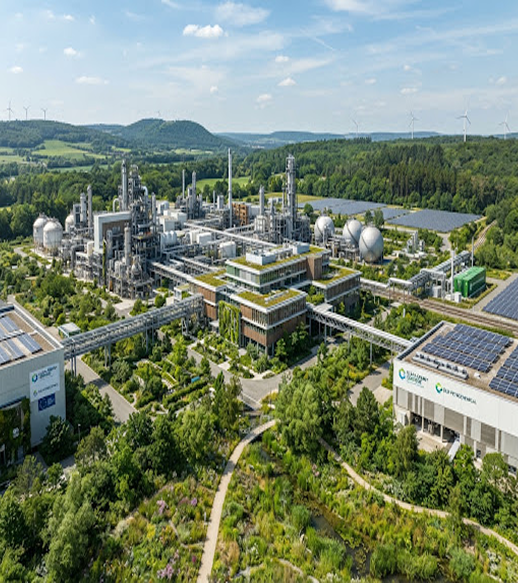

HOME > ESG경영 > 안전환경보건경영
안전환경보건경영Safe Workplace, Green Future
사람과 환경을 최우선으로 생각하는 안전경영
SMART SAFETY INFRASTRUCTURE철저한 예방 중심의 EHS(환경·안전·보건) 경영시스템 구축
현장 전역을 24시간 실시간 감지하고 선제적 위험을 원천 차단하는 지능형 안전 인프라를 구축하여 무결점 무재해 환경을 이끕니다.
- 환경안전 통합 시스템(EHS System) 고도화
- 전사 안전보건 데이터를 통합 관리하여 선제적 리스크 예방 체계를 가동합니다.
- 선제적 리스크 예방100% 가동
- 전사 통합 관리 데이터실시간 연동
-
통합 안전 관리 24/365 Fail-Safeverified_user
verified
- GLOBAL SAFETY STANDARD안전보건경영 ISO 45001 전 사업장 인증
- 여수, 울산, 대전 등 국내 전 사업장에 걸쳐 글로벌 표준 규격의 안전보건경영시스템을 100% 구축하여 운영하고 있습니다.
workspace_premium
- ISO 45001 인증 전사 100% 달성
- 국제 표준 규격 EHS 관리 프로세스 및 정기 적합성
검증 완료
- 공정안전관리(PSM) 우수 사업장 유지
- 여수, 울산 등 주요 고위험 사업장에서 엄격한 공정안전관리를 이행하고 있습니다.
- P등급최고등급
고용노동부 주관 공정안전관리 심사 - 0건중대 사고 예방 연속 달성
CLIMATE ACTION & CCUS ROADMAP기후변화 대응 및 친환경 공정 전환
탄소 포집·활용(CCUS) 기술 도입과 바이오 원료 전환을 통해 화석 에너지 기반 석유화학 산업의 한계를 뛰어넘고 지속가능한 순환 가치를 창출합니다.

탄소중립 이행 로드맵
2030–29% / 2050 Net–Zero
-
- trending_down온실가스 감축 로드맵
2030 온실가스 29% 감축 (2018년 대비)
- 직접 배출(Scope 1) 및 간접 배출(Scope 2) 감축 로드맵을 체계적으로 이행합니다.
- check_circle Scope 1 & 2 체계적 모니터링 및 실시간 감축 이행
- check_circle 2050 넷제로 달성을 위한 단계별 실행 플랜
- trending_down온실가스 감축 로드맵
-
- boltn에너지 청정 전환
열병합발전소 에너지 바이오매스 연료 혼소 확대
- 화석 연료를 대체하는 친환경 바이오매스 사용을 늘려 대기오염물질을 획기적으로 저감합니다.
- check_circle 화석연료 대체 바이오매스 사용 비율 대폭 확대
- check_circle 대기오염물질 저감 및 청정 발전 인프라 가동
- boltn에너지 청정 전환
-
- recycling원료 혁신 & 순환 경제
친환경 원료(Bio–Silica) 및 재활용 소재(PCR) 적용
- 생산 공정 전반에 걸쳐 순환 경제를 달성하기 위한 원료 혁신을 진행 중입니다.
- check_circle 쌀겨 추출 친환경 바이오 실리카 원료
상용화 - check_circle 재활용 PCR(Post–Consumer Recycled) 제품군
라인업 구축
- recycling원료 혁신 & 순환 경제
PARTNER EHS MUTUAL GROWTH대·중소기업 상생 안전보건 지원
- policy
협력사 합동 안전 점검
- 합동 점검반을 구성해 주기적 현장
위험 요소 발굴
- assignment_turned_in
위험성 평가 컨설팅 지원
- 안전 역량이 부족한 협력사에 전문적인
위험성 평가 기법 전수
- school
맞춤형 안전보건 교육
- 협력사 임직원 대상 법정
안전 교육 및 맞춤형 실무 교육 무상 지원
- favorite
협력업체 임직원 건강 증진
- 특수 건강 진단 지원 및 뇌심혈관
질환 예방 프로그램 운영
military_tech
EHS 상생 가이드라인 다운로드download
- PARTNERSHIP STANDARD
- 고용노동부 대·중소기업 안전보건 공생협력 프로그램 평가 최우수 A등급 획득